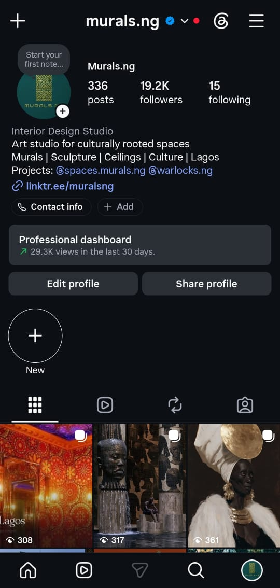
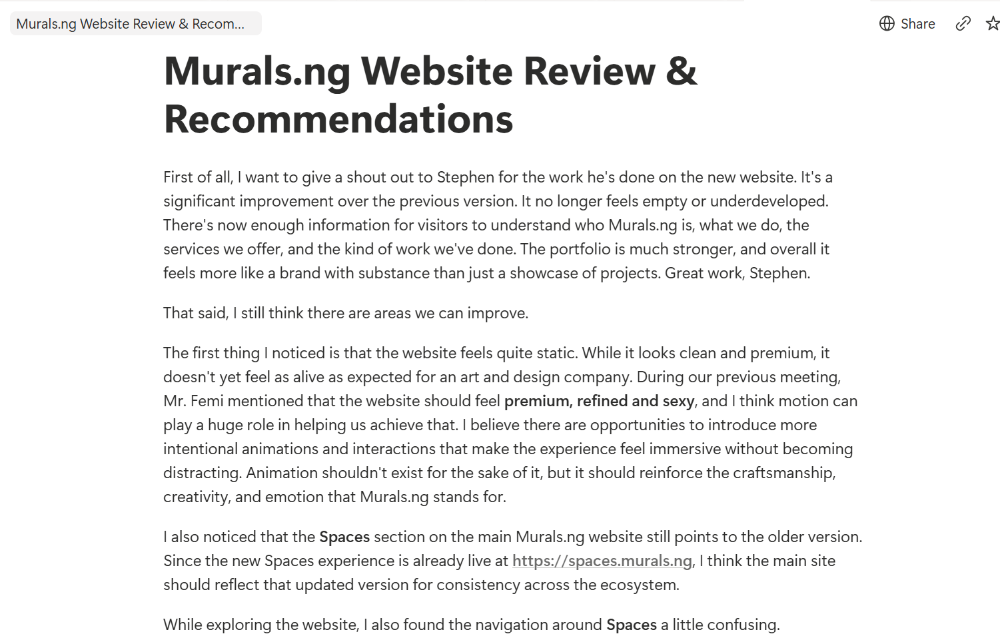

Marketing Copywriter & Strategist
When a good product doesn't sound like one, I fix that.
I'm Samuel Nnubaonye. Founders bring me in when the product works but the market doesn't get it yet: positioning is muddy, content isn't landing, or outbound gets opens and no replies. I find the actual gap between what the product does and what the message says, close it, and prove the fix worked with numbers you can check.
A few case studies below are anonymized under NDA. The problem, the decision, and the result are exactly what happened; I just can't name who it was for.
If this sounds familiar
- Your product converts well in demos, but the website doesn't get the same reaction.
- You've published content for months and can't point to a lead it produced.
- Outbound gets opened. Almost nobody replies.
- You've repositioned before, and the new version still doesn't feel like it's landing.
None of these are content problems by themselves. They're usually what a positioning problem looks like from the outside, and it's the part I get brought in to find.
What I actually fix
Four things I get brought in to do, in roughly the order a founder usually needs them.
Brand Positioning & Messaging
Clarifying who a product is for and why it matters to them, then carrying that clarity through every channel it shows up in.
Content & Copywriting
Founder-led content and ghostwriting, onboarding and lifecycle copy, outbound and cold email copy, landing pages, and long-form writing that sounds like a person, not a template.
Growth & Strategy
Social strategy and management, reply-based growth, content production systems, and customer research that turns real conversations into sharper positioning.
Campaign Direction & Community
Directing campaigns and brand storytelling, aligning messaging with an executive team, and building community growth that holds up past the first push.
Selected Results
Every line below is a number I can defend in a conversation, not a round figure chosen to sound good. Anonymized entries are marked, but the mechanism and the result are exactly what happened.
-
Personal / verified
Grew personal LinkedIn following from 500 to 2,895 in 2026 through a reply-based content strategy. The approach is estimated to have generated 500,000+ impressions and around 10,000 profile visits over a two-month stretch of active posting.
Evidence: audience demographics on individual posts
-
PukeCast / named
Reply strategy contributed to 21.7M X impressions on one founder's account and 19.8M on the other, including a single day that reached 834K impressions.
-
Anonymized, NDA
Rebuilt outbound email messaging around buyer context instead of product description for a fintech infrastructure client; reply rate increased from 2.3% to 5.1% in six weeks.
-
Anonymized
Built a fintech pre-launch waitlist from zero to 10,000 through positioning, content, and communication strategy.
-
Anonymized
Repositioned a B2B AI SaaS product around interviews with retained customers; trial-to-paid conversion increased from 0.9% to 6.3% in 11 weeks.
-
Anonymized
Repositioned a stalled Web3 waitlist page and outreach around a specific target user; signups grew from 340 to 2,100 in six weeks.
-
Pepper / named
Delivered a paid consulting engagement auditing and rewriting outbound email sequencing for CRO Eric Mueller. View the full audit report.
-
Smart Role / named
Delivered a paid consulting engagement building an X growth strategy for the in-house team to execute.
Want to walk through how one of these actually happened, step by step?
Book a callWork & Case Studies
No vague "grew engagement" language. Each case study breaks down the actual problem, what I decided to do about it, how it was executed, and the number it produced. Where a client can't be named, everything else is exactly as it happened.
01 B2B AI SaaS: Trial-to-Paid Conversion AI / SaaS · Anonymized 0.9% → 6.3%
Problem
The product was clean and functional, but trial-to-paid conversion was only 0.9%. The founder initially thought the pricing page needed a redesign. The deeper problem was positioning: the product solved a specific problem for a specific workflow, but the landing page tried to speak to everyone in the category, which made its relevance less obvious to the people it served best. The same gap showed up after signup. Onboarding emails focused on features rather than reinforcing the user's decision, and in-app tooltips explained the product without helping users understand why it mattered to their workflow.
Solution
I started with customers who had converted, stayed, and referred others, and asked what they were trying to solve when they signed up, what made them stay, and what they'd tell someone still undecided. Those conversations surfaced what paying customers understood about the product that other trial users didn't. We narrowed the positioning around that person and rewrote the headline, hero section, onboarding emails, and in-app tooltips around it.
How it was carried out
The homepage began leading with the customer's problem instead of the product. Onboarding shifted from introducing features to confirming the user had made the right call. Emails stopped announcing updates and started narrating progress. The customer conversations gave us language that mattered to people who had already found value, and we used it to rewrite the product narrative from the outside in, rather than from what the founder believed the product did.
Result
Trial-to-paid conversion increased from 0.9% to 6.3% over 11 weeks.
Evidence: client and product anonymized per confidentiality agreement. Mechanism and figures confirmed by the client.
02 Asè.ng / Murals.ng: Brand Repositioning Current role 21.7K → 29.3K views
Problem
The studio's previous positioning was drawing attention from AI enthusiasts rather than the art buyers and clients it was meant for. Beyond that, the brand lacked clarity for its ideal customers: the website and social content didn't make clear who Murals.ng is, what it does, how it does it, or the philosophy behind the work, and the two weren't saying the same thing.
Solution
Rebuilt the brand positioning and website copy, and took direction of Instagram content and visual and verbal tone. Fixed the clarity gap on the website and aligned it with the distributed content, so a visitor gets the same story whether they land on the site or scroll the feed, and search engines and AI answer tools have a consistent, well-structured version of who the studio is to draw from.
How it was carried out
Reviewed the existing website against what an ideal customer actually needs to understand in the first few seconds, then rewrote the copy to answer it directly: who the studio serves, what it does, how it works, and why it approaches art the way it does. Carried that same language into Instagram direction so the two channels reinforce each other instead of telling separate stories, which also makes the brand easier to find and correctly understood by both people and AI-driven search.
Result
In three weeks and seven days, the company's Instagram page grew from 21.7K to 29.3K views, gained more than 700 new followers, and produced three inbound leads reported to be worth more than ₦10 million combined. The founder also reported, via the company director, that Instagram content was performing well and generating inbound leads within the first month.
Evidence

Instagram dashboard, 29.3K views in the last 30 days
Website review identifying the clarity gap and fixesInstagram: instagram.com/murals.ng, including the Club Boho Lagos case study and the day-to-day content direction described above.
Evidence: the 29.3K-views figure and the website review are documented above. The starting point (21.7K), the follower count, and the ₦10 million lead valuation are reported directly rather than independently verified. The founder's comment on performance is reported secondhand, founder to director to this account. Role is current and ongoing.
03 Fintech Infrastructure: Outbound Reply Rate Fintech · Anonymized, NDA 2.3% → 5.1%
Problem
The company had a credible product, a clean prospect list, and reasonable open rates, but almost no one was replying to outbound email. The CRO's first instinct was to increase activity: more emails, another SDR, added LinkedIn touches. That would have increased volume without addressing why the existing messages weren't earning a response. The emails were written from inside the product. They were accurate about what it did, but not naming the buyer's specific situation or why the message was relevant at that moment.
Solution
I reviewed the actual outbound emails before changing copy or recommending more activity. The offer and targeting were valid, so I rebuilt the thinking underneath the emails around one question: what's happening in this buyer's world right now that makes this the exact moment to reach them. Each email was rebuilt from that buyer context outward, explaining the product only after establishing why the buyer might care now.
How it was carried out
The rewrite began with the buyer's actual circumstances rather than the product's capabilities, identifying what could be happening in their business before the email arrived and how the product related to it. That meant the prospect no longer had to translate a product description into personal relevance themselves. More volume wasn't recommended first, because it would have multiplied the same problem rather than fixed it.
Result
The CRO reported that reply rate increased from 2.3% to 5.1% over six weeks, with open rates also trending upward.
Evidence: client anonymized under signed NDA. Result reported directly by the CRO.
04 Fintech Pre-Launch: Waitlist From Zero Fintech · Anonymized 0 → 10,000
Problem
The product hadn't launched yet, but needed to create demand before it did. The commercial risk was launching without an audience that understood the product or had a reason to sign up, a traction problem: turning pre-launch attention into a meaningful waitlist.
Solution
Developed the pre-launch positioning, content, and communication strategy, focused on explaining the product clearly and giving the audience a reason to join before it was available, rather than simply publishing more content.
How it was carried out
The positioning helped people understand what the product was and why it mattered; content carried that message into the market and turned awareness into a specific action, joining the waitlist. That built an audience the brand could keep communicating with instead of starting from zero at launch.
Result
The waitlist reached 10,000 people before launch.
Evidence: client anonymized. Figure confirmed by the client.
05 PukeCast: Web3 Media Growth Web3 · Named 21.7M / 19.8M
Problem
The work focused on scaling two founders' presence on X through consistent daily content and stronger engagement, in a media environment where attention is highly time-sensitive and inconsistent posting loses ground fast.
Solution
Directed a monthly content bank of roughly five posts a day for both founders, produced in collaboration with two ghostwriters, and built a reply strategy designed to compound engagement across both accounts rather than treat each post in isolation.
How it was carried out
The monthly content bank kept output consistent even as topics and formats varied. The reply strategy used timely, specific replies on high-visibility posts elsewhere on the platform to draw attention back to both founders' accounts, which is what produced the account growth and, eventually, a post that reached X's trending page.
Result
Contributed to 21.7M X impressions on one founder's account and 19.8M on the other, including a single day that reached 834K impressions. One post trended on X and was covered by X News. Both founders qualified for X's creator monetization program as a result of the growth in reach.
Evidence
Evidence: figures are platform-reported and confirmed by screenshot; the trending post and coverage are publicly viewable. Engagement ended April 2026.
06 Web3 Product: Stalled Waitlist Repositioning Web3 · Anonymized 340 → 2,100
Problem
The product worked, early users liked it, and the founding team had credibility, but the waitlist had stalled at 340 people for six weeks. The founder believed the answer was more distribution. The actual issue was positioning: asked who the product was built for, the answer came back as broad categories, like Web3 builders, crypto-native teams, and blockchain developers, which described a market but not a specific person with a specific problem.
Solution
Spent three weeks clarifying who the product was for, what that person was trying to do, what had already failed them, and what they needed to believe before trusting a new tool with something important, moving from a broad category description to a position centred on one specific person.
How it was carried out
Rebuilt the waitlist page, announcement content, and community outreach messaging around that specific person, so the communication stopped speaking generally to the Web3 industry and started showing the relevant user why the product fit their particular need. Distribution, budget, and product stayed the same; only the positioning and communication changed, which made the existing attention more useful.
Result
The waitlist grew from 340 to 2,100 people in six weeks, an increase of 1,760 signups.
Evidence: client anonymized. Figures confirmed by the client.
07 Operation Safe Place: Content and Growth Leadership Named SMM → Director
Problem
The work focused on building a consistent content and community growth system for a gaming community platform, then extending into broader campaign direction and executive alignment as the scope of the role grew.
Solution
Started as Social Media Manager running day-to-day platform management, content creation and curation, and performance tracking. Moved into the Director role six months later, taking on content and growth strategy, campaign direction, brand storytelling, community growth, and alignment with the executive team.
How it was carried out
Built the initial content and platform management system as Social Media Manager, then used the results of that groundwork to take on strategic direction and executive-facing communication as Director, rather than the two functions running in parallel.
Result
Promoted from Social Media Manager to Director within six months. Continues in the Director role.
Evidence: title and date progression confirmed; specific growth metrics not independently verified.
Writing Samples: Content Strategy & SEO
Three long-form articles written on spec to show how I approach content strategy and SEO writing: content refresh strategy, topic clusters, and SaaS content marketing. Each includes the target keyword and search intent it was built around.
Topic Clusters Explained: A Practical Framework for Building Topical Authority
Summary: A working framework for building topic clusters around real search intent instead of your existing archive. Covers how to structure the pillar page, link the cluster correctly, and measure whether it's actually working.
Most explanations of topic clusters stop at the diagram. You've probably seen it: a circle in the middle labeled "pillar page," smaller circles around it labeled "cluster content," lines connecting them all. It looks clean. It also tells you almost nothing about how to actually build one.
The diagram is right, as far as it goes. The problem is execution, because building a topic cluster that genuinely earns topical authority takes more thought than drawing some circles and linking your existing posts together after the fact.
What a topic cluster actually does
Search engines don't just look at individual pages anymore. They look at how a site covers a subject as a whole, and they use that to decide whether your site has earned the right to rank for a topic, not just a single keyword.
A topic cluster is how you signal that coverage. One pillar page covers a broad topic at a high level, and a set of cluster pages each go deep on a specific sub-topic, linking back to the pillar and to each other where it makes sense. Done right, this tells Google your site has both breadth and depth on the subject, which is a much stronger signal than any single optimized page could send on its own.
The mistake most teams make is building the cluster around what content they already have, instead of around what their audience actually needs answered. That gets you a tidy-looking content map that doesn't move the needle, because it's organized around your archive instead of around search intent.
Start with the questions, not the content
Before you touch your existing posts, map out the actual questions someone researching your pillar topic would ask, in the order they'd ask them. If your pillar topic is, say, "email marketing for SaaS," the real question sequence probably looks like: what tools should I use, how do I segment my list, what's a good onboarding sequence, how do I measure what's working, what mistakes are costing me conversions.
Each of those questions becomes a candidate cluster page. Now go look at your existing content and see what already covers each one, even partially. You'll usually find some questions are already answered reasonably well, some are covered thinly, and some aren't covered at all. That gap list is your actual content roadmap, not a list of posts you happen to already have.
Building the pillar page
The pillar page is not a long-form, do-everything mega-post. That's a common misread of the model. It's a high-level overview that orients the reader and routes them into the right cluster page for whatever specific question they have.
Think of it as a table of contents with enough substance to stand on its own. It should rank for the broad, high-volume version of the topic, while each cluster page targets the more specific, often higher-intent long-tail version. A reader searching "email marketing for SaaS" lands on the pillar. A reader searching "how to write a SaaS onboarding email sequence" should land directly on the cluster page built for that question, not on the pillar.
Linking the cluster together
This is where most clusters fall apart. Internal linking gets treated as an afterthought, something you do in a single pass after all the content exists, dropping in a few links wherever they fit. That approach rarely reflects how someone actually moves through the topic.
Link from the pillar to every cluster page using the specific question or term that cluster page answers, not generic anchor text like "read more here." Link between cluster pages where there's a genuine logical next step. Someone reading about SaaS email segmentation is a reasonable candidate to read about onboarding sequences next. Someone reading about onboarding sequences probably isn't the right audience for a deep technical piece on deliverability, even if both pages technically sit under the same pillar.
The goal is a structure someone could navigate with intent, not just a web of links that exist to satisfy an SEO checklist.
How to know if it's working
Topical authority is slow to build and slower to measure, which is exactly why teams give up on cluster strategies before they've had time to work. Don't judge a new cluster on individual page rankings in the first few months. Instead, watch two things: whether the pillar page's ranking improves as you publish more cluster content underneath it, and whether cluster pages start ranking for queries you never explicitly targeted.
That second signal matters more than people realize. When a cluster page starts showing up for related searches you didn't write it for, that's a sign Google has started to understand the relationship between your pages, which is the entire point of building the cluster in the first place.
The part nobody wants to hear
A topic cluster takes longer to pay off than almost any other content tactic, and it requires resisting the urge to publish whatever's easiest to write next. If you build it around real search intent, link it with intent rather than convenience, and give it time, it compounds in a way that scattered, one-off articles never do. If you build it around your existing archive just to check a box, it'll look like a topic cluster without functioning like one, and the results will tell you the difference within a few months.
SEO approach
Content Marketing for SaaS Companies: How to Drive Organic Signups Without a Big Ad Budget
Summary: A funnel-stage approach to SaaS content marketing that explains why most blog content doesn't convert, and how to fix it without increasing spend.
Most SaaS companies start their content marketing the same way: they hire someone to write two blog posts a week, pick keywords off a tool with decent search volume, and wait. Six months later they have forty articles, modest traffic, and almost no new signups they can trace back to any of it.
That's not a content problem. It's a sequencing problem. The content itself might be fine. It's just aimed at the wrong stage of the buyer's journey, or published with no plan for what happens after someone reads it.
Why most SaaS content doesn't convert
A reader who finds your article through a broad, top-of-funnel search term is not the same reader who's actively comparing tools and ready to sign up. Most SaaS content marketing treats every article the same way, with the same generic call to action at the bottom pointing to a free trial. That mismatch is why traffic and signups so often move in completely different directions.
The fix isn't more content. It's matching the content to where the reader actually is, and being honest about what each piece of content can realistically do.
Top of funnel: be useful before you're persuasive
At the awareness stage, the reader doesn't know your product exists yet and isn't looking for it. They're searching for a problem, not a solution. A small business owner searching "why is my churn rate increasing" doesn't want a pitch. They want a genuinely useful breakdown of common causes.
This is where you build trust and start showing up for searches your product touches, even loosely. The mistake to avoid is shoehorning your product into every paragraph. One natural mention near the end, framed as one option among the ways to address the problem, does more for long-term trust than three paragraphs of soft pitching.
Middle of funnel: comparison and proof
Once someone knows solutions like yours exist, they start comparing. This is where "best tools for X" and "[competitor] alternatives" content earns its keep, and it's also where most SaaS companies get nervous about being too direct.
Be direct anyway. A reader comparing options wants specifics: pricing structure, what's genuinely different about your approach, who you're not a good fit for. Vague comparison content that avoids naming competitors or admitting your own limitations reads as evasive, and evasive content loses against a competitor's content that just answers the question.
Case studies belong here too, but the generic format, problem, solution, result, is weak unless the numbers are specific and the customer's situation is similar enough to the reader's that they can see themselves in it. A vague "increased efficiency by 30%" does less work than a specific, slightly less polished detail like a customer cutting onboarding time from three weeks to four days, because specificity reads as true in a way round numbers don't.
Bottom of funnel: remove the last doubts
By the time someone is reading pricing pages, security documentation, or integration guides, they've largely decided they're interested. The job of content here isn't to persuade, it's to answer the practical questions that stall a signup: does this integrate with what I already use, how does onboarding actually work, what happens if I need to cancel.
This content rarely gets much organic traffic on its own, and that's fine. Its job isn't to attract readers. Its job is to remove the friction that's sitting between an interested reader and an actual signup.
Doing this without a big budget
The instinct with a small budget is to spread thin: a little bit of everything, published less often. That's backwards. With limited resources, concentrate on the middle of the funnel first, since that's where the clearest line exists between content and signups, then build outward toward top-of-funnel content once you have a baseline of organic traffic worth nurturing.
A genuinely useful early move that costs nothing but time: build a few in-depth comparison pages against your two or three closest competitors before investing heavily in broad top-of-funnel content. These pages tend to have lower competition than generic head terms, attract readers who are close to a decision, and give you a clear, measurable signal of whether your content is actually driving signups before you scale up spend on content further up the funnel.
Measuring what actually matters
Traffic is the easiest number to track and the least useful one on its own. If you can, tag content by funnel stage and track signups against that tag, even with a rough manual process, rather than looking at site-wide traffic and signup numbers as if they're connected.
A piece of bottom-of-funnel content with two hundred monthly visitors and a noticeably higher signup rate than your site average is doing more for the business than a top-of-funnel piece with five thousand visitors and almost no downstream signups. Most teams keep producing more of the second kind because the traffic number feels good, while quietly underinvesting in the kind of content that's actually paying for itself.
The real shift
Content marketing for SaaS doesn't fail because the writing is bad or the keywords are wrong. It fails when every piece is written for the same imaginary reader at the same stage of deciding, with the same call to action bolted on at the end. Match the content to the stage, be specific instead of safe in the middle of the funnel, and the organic signups follow a much clearer path than another six months of generic blog posts ever will.
SEO approach
How to Refresh Old Content Without Losing the Rankings You Already Have
Summary: A practical breakdown of how to update old articles without accidentally tanking the rankings they've already earned. Covers what to change, what to leave alone, and how to prioritize a backlog.
Every publisher hits the same wall eventually. You've got a backlog of articles from two or three years ago, some of them still pulling in decent traffic, and a nagging feeling that half of them are quietly going stale. The question isn't whether to update them. It's how to do it without breaking what's already working.
That second part trips up more teams than you'd think. I've seen content managers rewrite a perfectly good page from top to bottom, watch the traffic drop the following month, and have no idea which change caused it. Refreshing content is not the same as rewriting it. Treat it like the second and you're gambling with rankings you already paid for in time and effort.
Why a refresh is different from a rewrite
A rewrite assumes the page failed. A refresh assumes the page mostly works and needs targeted updates to keep working. That distinction changes everything about how you approach the page.
When you rewrite, you're starting from a blank slate, which means you lose whatever signals Google has already attached to that URL, things like dwell time patterns, the specific phrasing that's earning featured snippets, internal links pointing at specific sections. When you refresh, you keep all of that intact and layer improvements on top of it.
This matters more for older B2B and SaaS content than almost anywhere else, because that content tends to rank for long-tail, high-intent terms that took months to earn. Burn that down for a cosmetic rewrite and you're starting the clock over.
What actually needs updating
Not every old post needs the same treatment. Before touching anything, sort your backlog into three buckets.
The first bucket is posts that are factually outdated. Pricing changed, a feature got deprecated, a statistic you cited five years ago doesn't reflect reality anymore. These need updates regardless of how they're performing, because outdated facts erode trust even on pages with strong traffic.
The second bucket is posts that are thin relative to what's currently ranking above them. Pull up the top five results for your target keyword and look at what they cover that you don't. Maybe they answer three sub-questions you skipped, or they include a comparison table you never built. This is where most of your refresh effort should go.
The third bucket is posts that are simply old in tone or format, but otherwise solid. These need a lighter touch: updated examples, a fresher intro, maybe a new section, but not a structural overhaul.
A process that doesn't break what's working
Start by pulling performance data on the page going back at least twelve months. You want to know which sections people actually read and where they drop off, not just an overall pageview number. If you have scroll-depth or heatmap data, use it. If you don't, look at which headings already rank for featured snippets in Search Console and treat those sections as protected territory.
Next, do a competitor gap check. Search the target keyword, open the top four or five results, and note what they cover that your page doesn't. You're not copying their structure, you're identifying the gaps that are likely costing you positions.
Then update in this order: facts and figures first, structural gaps second, tone and formatting last. Facts and figures are non-negotiable and low-risk to change. Structural gaps, like adding a missing section or expanding a shallow one, carry slightly more risk, so make them additive rather than replacing existing sections wholesale. Tone and formatting changes, things like breaking up long paragraphs or adding subheadings, are cosmetic and safe to do last.
Keep the original publish date if your CMS shows one, but add a visible "last updated" date. Readers and search engines both use this as a freshness signal, and it costs you nothing to add.
What to leave alone
This is the part people skip. If a section is already ranking for a featured snippet or is driving a disproportionate share of the page's organic clicks based on your search console data, don't touch the wording. You can add context around it, but rewriting language that's already winning is the single most common way teams accidentally tank a page they were trying to improve.
Same goes for internal links pointing into the page from other parts of your site. If twelve other articles link to a specific section using specific anchor text, changing that section's heading or removing it breaks the relevance of every one of those links.
A simple way to prioritize your backlog
If you're staring at fifty old posts and don't know where to start, rank them by a rough formula: current traffic times how far they sit below page one. A post getting decent traffic on page two of search results is sitting on more upside than a post buried on page four with almost no traffic, even if the second one feels more urgent because it's performing worse.
Refresh the page-two posts first. They're closer to a ranking jump, which means the return on your time is faster and easier to measure. Once you've cleared that group, move to posts that are factually wrong regardless of their ranking, since those carry a trust cost that traffic numbers won't capture.
The real goal
A content refresh strategy isn't about making old pages look new. It's about closing the specific gaps that are holding a page back from where it could rank, while protecting the parts that already work. Done well, nobody reading the page notices it was touched at all. They just find what they're looking for, a little more completely than they would have a year ago.
SEO approach
How I think about this work
Positioning before content
More posts don't fix a message that's aimed at the wrong person. I look for the positioning problem first, because content built on top of it just repeats the mistake faster.
Specific over comfortable
"Increased engagement" is a number nobody can check. A conversion rate, a reply rate, a follower count with a date attached is one a client can verify, which is exactly why I use the second kind.
The mechanism matters more than the metric
A result without the reasoning behind it isn't repeatable. Every case study here explains what changed and why, not just what the number did afterward.
Ways we could work together
Three categories of work, each grounded in something already proven above rather than a package I've invented for this page.
Positioning & Messaging
An audit of what your website, product, and content are actually saying, followed by a rewrite that says who it's for and why it matters to them. This is the work behind the B2B AI SaaS, Web3, and Murals.ng case studies above.
Content Systems & Ghostwriting
Ongoing founder-led content, built as a repeatable system rather than a one-off batch of posts. This is the work behind PukeCast and Operation Safe Place.
Outbound & Growth Copy
Email sequences and reply-based growth strategy built around buyer context instead of product features. This is the work behind the fintech infrastructure result and my own LinkedIn growth.
Not sure which of these fits what you need? That's a fine reason to just talk it through.
Book a callAbout
From Samuel Nnubaonye
To Founders who need clearer market communication
Subject Why I do this work
I studied French and European languages at Nnamdi Azikiwe University, which is an odd starting point for a copywriter until you notice how much of the work is translation: taking what a founder or a product actually does and making it legible to the person who needs it.
I've done that translation work under NDA for fintech and SaaS clients, in the open for a Web3 media company's founders, and now for an art studio figuring out who it's actually for. Some of it shows up as a rewritten onboarding flow. Some of it shows up as a reply on X that reaches more people than the original post. Same skill, different surface.
I work from Lagos, Nigeria, and take on remote engagements. If your product is good and your market still doesn't get it, that gap is the part I'm best at closing.
A few things people ask
Do you only work with SaaS, fintech, and AI companies?
That's where most of my recent work sits and where I want to keep building depth, but the case studies above also include a Web3 media company, a gaming community platform, and an art studio. If your company sits outside those three categories, it's still worth a conversation.
Some of your case studies are anonymized. How do I know they're real?
Client names are withheld where an NDA requires it, not because the details are invented. Where I can show evidence, like the CRO's message or the analytics screenshots above, I have. On a call, I'm glad to walk through the mechanism of any case study in more depth than fits on this page.
What does working together actually look like?
It usually starts with a call to understand what's actually going on, since the thing you think is broken and the thing that's actually broken aren't always the same. From there, the scope depends on what you need: a positioning rewrite, an ongoing content system, or something narrower. I'd rather scope it after that first conversation than guess at it here.
If the product is good but the message isn't doing it justice, let's fix that.
Book a time below, or reach me directly. Either way, you'll know exactly what happens next: a conversation about what's actually going on, not a sales pitch.
- Email nnubaonyesamuel@gmail.com
- Phone +234 901 518 3698
- LinkedIn linkedin.com/in/samuel-nnubaonye-1ab6541b0